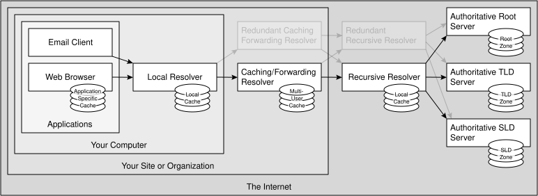
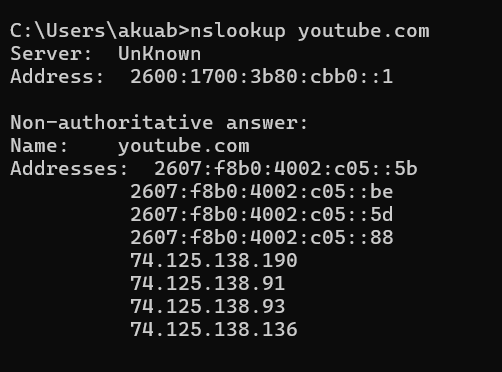
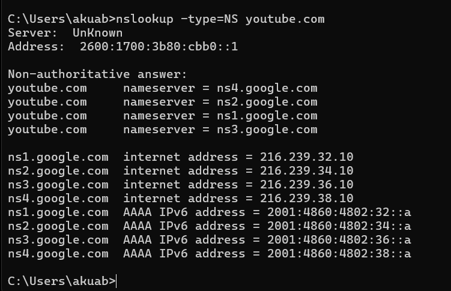

From a Domain Name to an IP Address
When a user enters a domain name into a web browser, the browser sends a request to a DNS resolver. The resolver then queries various DNS servers to find the IP address. Then, once the IP address is found, it is returned to the browser to then connect to the server hosting the website; a proccess called name resolution.
The process involves several steps, including checking the local cache, querying root servers, top-level domain (TLD) servers, and authoritative name servers. However, your browser or OS my have it stored in its cache already, so the entire process my not be needed. This hierarchical structure ensures that DNS queries are resolved efficiently.
The DNS Lookup Process
If the resolver does not have a cached answer, it may follow these steps to find a website's IP address...
- Root server: Directs the resolver to the appropriate top-level domain server.
- Top-level domain server: A server for an extension such as ".com" directs the resolver to the domain's authoritative name server.
- Authoritative name server: Provides the requested DNS record, such as an IP address.
- Answer returned: The resolver sends the answer to your device and caches it for a period determined by its time to live (TTL).
Your browser can then use the IP address to connect to the web server. Cached information can allow future lookups to skip some of these steps.

DNS Root Servers
Root servers serve information from the root zone at the top of the DNS hierarchy. They help resolvers find the servers responsible for top-level domains such as .com and .org.
The root server system has 13 named identities, labeled A through M. These identities are supported by many server instances around the world.
The 13 Root Server Names
- a.root-servers.net
- b.root-servers.net
- c.root-servers.net
- d.root-servers.net
- e.root-servers.net
- f.root-servers.net
- g.root-servers.net
- h.root-servers.net
- i.root-servers.net
- j.root-servers.net
- k.root-servers.net
- l.root-servers.net
- m.root-servers.net
Explore the operators and worldwide locations at the Root Server Technical Operations Association .
Common DNS Records
DNS stores different types of records. Each type provides specific information about a domain.
| Record Type | Purpose |
|---|---|
| A | Maps a name to an IPv4 address. |
| AAAA | Maps a name to an IPv6 address. |
| CNAME | Points an alias name to another domain name. |
| MX | Identifies mail servers for a domain. |
| NS | Identifies authoritative name servers for a zone. |
DNS in Action: YouTube
I used Windows Command Prompt to look up DNS information for: YouTube. The results show IP addresses associated with youtube.com and its authoritative name servers.
Finding YouTube's IP Addresses
I entered the following command:
nslookup youtube.com
The Server and Address fields at the top identify the DNS resolver that answered the request. The server name appears as "UnKnown because nslookup could not determine its hostname. However, he lookup still succeeded.
Below the domain name, the response lists four IPv6 addresses and four IPv4 addresses. A domain can have multiple addresses.
The label Non-authoritative answer means the response was supplied by a resolver rather than directly by the domain's authoritative name server.
YouTube's Authoritative Name Servers
I then requested NS records using this command:
nslookup -type=NS youtube.com
The response lists four authoritative name servers: ns1.google.com, ns2.google.com, ns3.google.com, and ns4.google.com. It also displays IPv4 and IPv6 addresses for these servers.
These name servers provide DNS information for youtube.com. These addresses are separate from the website addresses returned by the first lookup.
DNS Video Explanation
This animated video provides another explanation of DNS and the name resolution process.